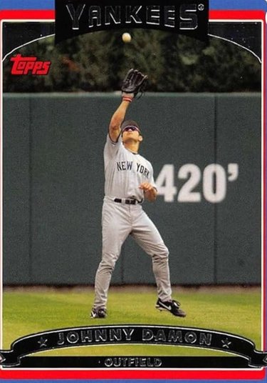

Johnny Damon "Caveman"
Career Highlights & Facts
(Facts are AI-generated and may require verification)
- Known for a signature long-haired, bearded appearance that turned into a cultural phenomenon.
- Executed a daring double-steal in a World Series game by popping out of a slide to take an uncovered base.
- Began a professional career after being selected as a 1st round draft pick.
Would you like to find out more about Johnny Damon?
Player Biography
Johnny Damon
January 4, 2012
/
in
BioProject - Person
2000s All-Stars
2004 Boston Red Sox
,
Kansas City Royals 50th Anniversary
/
by
admin
This article was written by
Mark S. Sternman
A run-scoring-machine leadoff hitter with great speed (408 career steals) and good power (235 homers), Johnny Damon had “good range defensively but … one of the worst outfield arms in the big leagues.”
1
Offensively, Damon had his best years with Kansas City in 2000 and Boston in 2004, and won World Series titles with both the Red Sox in 2004 and the Yankees in 2009. Damon’s legacy largely stems from his starring role in leading the Red Sox to the franchise’s first championship in 86 years, notoriety that says as much about the outsized role of baseball in the Boston landscape and Damon’s media-friendly personality as it does about Damon’s considerable on-field accomplishments.
Johnny Damon owes his life to the Vietnam War. His parents, Jimmy and Yome, met in his mother’s native Thailand, where his father served as a U.S. Army sergeant. Yome’s father practiced holistic medicine, and his mother farmed. Yome gave birth to James Damon in Bangkok in 1971 and to Johnny in Kansas two years later. The family moved first to Illinois before settling in Florida, where Jimmy worked as a security guard and Yome as an office cleaner. “Johnny was like Yome, all nervous energy,” an observer wrote. “Once, when he was 14, he took his mother’s car to Daytona. … Stopped by a police officer, Johnny said he’d forgotten his license. When asked his name, he gave the name of his big brother. The ruse worked … when the officer didn’t show up for the court date.”
2
Leading up to the 1992 draft,
The Sporting News
called Damon, then a senior, “probably … the best high school player available this year. ‘He has great speed, is extremely strong, and his throwing has improved,’ [Damon’s] high school coach Danny Allie says. ‘He’s also got great power … and 3.8-second speed to first base. A lot of guys have compared him to
Ken Griffey Jr.
’”
3
Kansas City drafted Damon with the 35th pick in the first round of the 1992 draft. “A straight-A student in high school, he walked away from a baseball scholarship at the University of Florida to sign with the Royals for $300,000”
4
Aside from his future teammate
Derek Jeter
, Damon would have the best career of his fellow first-round draftees.
Displaying the same skills that he would show in the majors, Damon hit for average, stole scores of bases, and flashed occasional power in the minors. He won the J.G. Taylor Spink Award as the National Association Minor League Player of the Year for his performance in Wichita in 1995 even though he did not play a full season in Double A that year.
Called up from Wichita, Damon made his major-league debut against Seattle on August 12, 1995, leading off and playing center field. Facing
Tim Belcher
, Damon popped out to short in his first AL plate appearance. After flying out in his second at-bat, he tripled and scored in the fifth inning against Belcher, had an RBI single in the sixth off
Salomon Torres
, and singled against Torres again in the eighth as the Royals won, 7-2.
On August 31, Kansas City trailed Milwaukee 6-5 going into the bottom of the ninth. Damon hit his first homer in the majors to tie the game off
Mike Fetters
, and the Royals won in unusual walk-off fashion thanks to a bases-loaded throwing error on a pickoff attempt by Fetters. Damon’s teammates had quickly taken to the talented rookie. “He’s our sparkplug right now,” first baseman
Wally Joyner
said.
5
“He’s going to do just about everything you could want…,” Royals manager
Bob Boone
said. “I’m pleased he’s this good. But I’m not surprised.”
6
On August 10, 1996, Damon set a career high with seven RBIs in an 18-3 win over the Angels. But “he slumped near season’s end … as his confidence fell.”
7
After beginning 1997 as Kansas City’s fourth outfielder, Damon rebounded somewhat although he had a career-worst 61.5 percent stolen-base rate, perhaps due to knee soreness that worsened in July and would necessitate offseason surgery.
8
Retrospectively, Damon credited
Tony Muser
, who replaced Boone for the second half of the season, with his resurgence. Damon recalled, “My first couple years, I didn’t play every day. I would sit against left-handers sometimes. And then when Muser started managing … he said, ‘Guess what? You’re going to be batting leadoff for me every day, and the only times you’re not going to play is if you break something.’”
9
Damon scored 100 runs for the first of 10 times in his career in 1998. In 1999, he hit over .300 for the first of five times for a Kansas City team that went 64-97 in spite of a strong outfield with Damon in left,
Carlos Beltran
in center, and
Jermaine Dye
in right.
Damon’s improved play ironically shortened his time with the Royals, as the small-market Kansas City franchise risked losing him for nothing as he approached free agency after the 2001 season.
The Sporting News
reported rumors of Damon going to the Yankees for
Alfonso Soriano
,
10
to the Mariners for Griffey Jr.,
11
or to the Dodgers for
Eric Gagne
.
12
“There are clubs with higher payrolls in bigger markets that would give anything to have Johnny, because he’s the one piece that a club thinks can cement the playoffs or World Series,” said Royals general manager Hank Robinson.
13
Because of or despite the rumors, Damon had his best year in a Kansas City uniform in 2000 with career highs in plate appearances (741), at-bats (655), runs (136), hits (214), doubles (42), steals (46), batting average (.327), on-base percentage (.382), slugging percentage (.495), OPS (.877), and total bases (324). He led the AL in both runs and steals.
In June, the Royals reportedly offered Damon a three-year contract for $15 million. “But Damon is adamant about a five-year deal,”
The Sporting News
reported, adding, “He also labeled the average yearly salary Boston gave
Jose Offerman
, $6.5 million, as his ‘starting point.’”
14
Damon batted .436 in July 2000, .382 in August, and .322 in September. Kansas City had tapped Allard Baird as GM to replace Robinson. Baird, the scout who had signed Damon for the Royals, upped the KC contract offer to $32 million over five years, which agent Scott Boras rejected on Damon’s behalf.
15
Recognizing that Kansas City could not keep Damon, Baird shipped him to Oakland as part of a three-way deal that also involved Tampa Bay. “I was in Kansas City for five years,” Damon said. “I had a home there. I had my family there. I had everything. It was great for me there, except for losing.”
16
Damon also liked hitting in Kansas City. “It plays fair. The waterfalls are cool. When I came up in the league, that was one of the toughest places to hit and to hit home runs. But as I developed, and as the years have gone by, it has become one of the easiest for me.”
17
Damon left the losing behind with the Royals. The A’s had gone 91-70 in 2000 before falling to the Yankees in five games in the ALDS. Damon thought that he could help make Oakland take the next step. “Looking at this team on paper, I think we’re the team to beat out there,” Damon said. … “This is a great situation to be in.”
18
With Damon, Oakland improved to 102-60, but Seattle, which had also won 91 games in 2000, captured 116 in 2001. Damon did not enjoy his first trip as a visiting player to Kansas City, where “a radio station sponsored a ‘Boo Johnny Damon Day’ … including a sweepstakes for a free big-screen TV if he committed an error.”
19
The A’s returned to the playoffs via the wild card but did so with only modest contributions from Damon, who failed to hit 10 homers for the only time from 1998 to 2009. Damon blamed it “partly (on) the A’s strategy that calls for hitters to work the count to tire opposing pitchers. As a result, he said, he was less aggressive and found himself facing more two-strike counts.”
20
Oakland would again face New York in the ALDS.
The series began in the Bronx. In his first career playoff game, Damon went 4-for-4 with a walk and two steals as the A’s won 5-3. In Game Two, Damon doubled off
Andy Pettitte
and tripled off
Mariano Rivera
. Damon scored an insurance run after the triple as the A’s triumphed 2-0 and needed just one win to advance to the ALCS. “It’s hard to believe he was being called one of baseball’s biggest disappointments at midseason and was being followed by rumors that he would be traded … because his contract was up at season’s end. ‘I know that he was very hard on himself for a time,’ A’s manager
Art Howe
said. ‘Sometimes it just takes a person time to get adjusted to his surroundings.’”
21
Neither Damon nor Oakland could keep up the good start. Damon went 3-for-13 as the Yankees won the last three games, eliminating the A’s again and ending Damon’s brief sojourn in Oakland as he signed with Boston as a free agent. “Damon wanted to play closer to his Florida home, where he and his wife, Angie, are raising twins who [turned] 3 in [2002]. ‘Oakland did everything in their power to sign me,’ Damon said. ‘The biggest thing was the moving back to the Eastern time zone. It boiled down to my family.’”
22
Boston won 82 games in 2001, but 93 games with Damon in 2002. “I had a feeling about this team when I signed in the offseason because of the attitude I bring,” said Damon … “[W]ith guys like
Rickey Henderson
,
Carlos Baerga
, and
Tony Clark
… I feel we can do something special here.”
23
Damon brought both swagger and swat to Boston. “Damon has … been … the heart of the team,” said [Sox teammate
Pedro] Martinez
. “He has done everything. He gets on base. He puts pressure on the other teams – on the catcher and the pitcher.”
24
Damon led the American League with 11 triples, made his first All-Star team, and “benefited from the tutelage of hitting instructor
Dwight Evans
. Early in spring training, Evans noticed that Damon was releasing his top hand too soon, and he got Damon to keep both hands on the bat.”
25
In 2001, Damon started poorly but finished strongly. He did the reverse in 2002 when he “went through a difficult divorce from his high-school sweetheart, which may have affected him even more deeply than his active role in labor negotiations and the knee injury that slowed him but did not require postseason surgery.”
26
Boston failed to make the playoffs in 2002, but reached the postseason in the remaining three years of Damon’s Hub tenure.
Damon must have had flashbacks entering the 2003 ALDS. In his second playoffs, he faced Oakland, the team that had first taken him to the postseason. As in 2001, the A’s won the first two games and needed just one more win to advance to the ALCS. Oakland lost the third game, 3-1, and the fourth game, 5-4, thanks in part to Damon hitting a two-run homer (the first of his 10 career playoff bombs) and throwing out
Jose Guillen
attempting to go first-to-third on a single.
Facing
Barry Zito
, Boston trailed 1-0 going into the top of the sixth of the deciding game.
Jason Varitek
homered to tie the game, and Damon followed with a walk. With two outs and two on,
Manny Ramirez
homered to give Boston a 4-1 edge. Behind Martinez, the Red Sox led 4-2 in the bottom of the seventh with two outs “when Jermaine Dye lifted a pop fly into shallow center. [Second baseman
Damian] Jackson
… sprinted into the outfield … while Damon came charging in, calling for the ball. The ball … landed in Jackson’s … glove when … the right side of Jackson’s head squarely struck Damon’s head, also on the right side.”
27
Damon left the game in the next inning for a pinch-hitter, and the Red Sox held on to win in spite of Damon’s departure due to a concussion. Later that week, Damon admitted, “I had no idea what was going on for the next four or five hours. … I was in really bad shape.”
28
Boston faced New York in an epic ALCS. Damon missed the first two games before returning to go 3-for-4 in Game Three. But he went just 1-for-16 in the final four games. Damon missed a key chance to blow the deciding contest wide open when Boston led 4-0 in the top of the fourth with runners on first and third and none out as
Mike Mussina
replaced
Roger Clemens
. Mussina fanned Varitek and induced a double play from Damon to keep the margin at four runs. The Yankees rallied to win the game and the pennant, 6-5, on
Aaron Boone
’s 11th-inning walk-off homer.
Damon and Boston got their revenge in 2004. Damon set career highs with 94 RBIs and 76 walks. After not getting his hair cut in the offseason, Damon became “a cult figure virtually overnight.”
29
As the longtime
Boston Globe
columnist Bob Ryan opined, “Johnny Damon is, and has always been, a good player, beard or no beard, hair down to his tushie or hair neatly cropped. He is a leadoff man whose job is to get on base and ignite an offense, and if you measure his value by looking at runs you’d have to say he’s been pretty good.”
30
A master marketer, Damon rebranded the supposedly cursed Red Sox as carefree idiots, commenting, “Maybe it’s not the greatest thing to say, but for the most part, we are. We just play the game. … We’re not too bright of [
sic
] guys. In essence, we’re idiots. We go out there and swing the bat as hard as we can. We make fun. … We’ve got the long hair, the ponytails.”
31
Boston swept Anaheim in the ALDS to set up an ALCS rematch against New York. The Red Sox dropped the first two games in the Bronx as Damon struggled. “It starts with me,” said Damon, who fanned four times in four at-bats in the Game One loss, and followed with an 0-for-4, including one more strikeout, in Game Two. “I take full responsibility for these two games. … I’m very disappointed with myself.”
32
Boston returned to Fenway Park only to get shellacked 19-8. After the rout, Damon faced the media and confessed, “We’re very upset. And we’re definitely stunned. We thought we had the better team coming in and right now it doesn’t look that way.”
33
The prospects of the Red Sox brightened after Boston won the next three games to force an elimination contest. Damon led off with a single and stole second, but a relay from
Hideki Matsui
to Jeter to
Jorge Posada
cut him down trying to score on a Ramirez single. The Red Sox led 2-0 in the second inning when Damon came up to bat against
Javier Vazquez
, who had just relieved
Kevin Brown
. On Vazquez’s first pitch, Damon hit a grand slam that gave Boston an insurmountable lead. Damon later hit a two-run homer against Vazquez as well en route to a 10-3 win. “To do this against the Yankees in their ballpark is definitely a very special feeling,” Damon said after the win that gave the Red Sox the AL pennant.
34
Damon’s postseason power continued as Boston sought to end its 86 years of baseball misery. He “ignited the Red Sox … with his left-field double in the first inning off
Woody Williams
that put the team on its way to an 11-9 win over the St. Louis Cardinals in Game 1 of the World Series. … ‘This is the World Series, so you want to make an impact out there,’ Damon said.”
35
Damon started the championship clincher with “a rope into the Cardinals’ bullpen on the game’s fourth pitch from
Jason Marquis
.”
36
He later tripled as Boston swept St. Louis to win the 2004 World Series.
Helping bring the title back to a rabid baseball-championship-starved fan base transformed Damon from a baseball cult figure to a boldfaced name with broader celebrity appeal in Boston,
37
partially fulfilling a prediction Damon made at his post-signing press conference in Boston: “When we win a World Series,” he said, “we’re going to be put on a pedestal and be immortalized forever.”
38
In Damon’s case, the adulation lasted only a year, but the bitterness that began in 2006 lasted several seasons.
39
In December 2004, he married for the second time, to Michelle Mangan, an event deemed worthy of a photo and extensive coverage on the society page of the
Boston Globe
.
40
But the Red Sox front office declined to engage with Damon as his contract approached its conclusion at the end of the 2005 season. “I’d like to finish my career here and get locked up for a long time,” Damon said. “I know it’s always been Red Sox policy to wait until after the season, but that can get hairy. … I’m in a good spot … but the Red Sox know that this is the best spot for me personally.”
41
For the second and last time in his career, Damon made the All-Star team in 2005, this time as a starter. He also had a 29-game hitting streak that ended in a loss to Tampa Bay. “I definitely felt like if I could have gotten past today, I could have taken it further,” said Damon. “The funny thing is, the swing really hasn’t felt great during this streak, and I’m amazed that it got up to 29.”
42
Boston’s quick dismissal from the playoffs after an ALDS sweep by Chicago made Damon’s regular-season accomplishments less meaningful. With the Red Sox trailing by a run in the sixth inning of the final game with two outs and the bases loaded, Damon worked the count full against
Orlando Hernandez
. In his autobiography, published after the 2004 World Series, Damon had mockingly touched on the unique stylings of Hernandez, writing, “He’s one of those 50-year-old Cuban pitchers with all the funky motions and all the funny pitches and different speeds, but he knows what to do. … If he doesn’t have his good stuff, he starts innovating.”
43
Hernandez did indeed know what to do. “After a foul, El Duque fooled Damon with a wicked breaking ball that wound up in the dirt. Damon committed with his swing and was rung up to end the inning. ‘The right pitch at the right time,’ conceded Damon.”
44
In his final plate appearance in a Boston uniform, Damon struck out swinging again for the second out of the ninth inning in a game the Red Sox lost, 5-3.
A month later, Boras began advocating for his free-agent client with a paper that “confidently predicts that Damon will join the 3,000 hit club in 2012, and … dares to place Damon in the company of Hall of Famers if he produces through 2015 the way he has [from 2002-2005].”
45
The Red Sox offered Damon $42 million over four years,
46
but he signed with the Yankees for $52 million over four years instead. The
Boston Globe
editorialized on Damon’s departure. In a particularly poor piece of Christmas Eve prognostication, Boston’s paper of record wrote, “Marvelous as the beloved Idiot was in that championship season of ’04, Red Sox fans needs to cast a cold eye on the future value of a weak-armed 32-year-old center fielder stationed in 2009 in the great expanse of Yankee Stadium.”
47
In 2006, Damon hit a career-high 24 homers in his first season in the Bronx, a figure he matched in 2009, when he brought great value to the Yankees outfield. In August 2006, a Boston writer conceded that Damon “has been worth every bit of the extra $12 million George Steinbrenner ponied up to take him away from the Red Sox. The Yankees got a very good player while taking one away from their biggest competition.”
48
While New York won the division with 97 wins in 2006, Damon could not deliver in the playoffs against Detroit, which knocked out New York in four ALDS games. Michelle gave birth to her first child and Johnny’s third after the 2006 season. (They had a second child together after the 2008 season.) The Yanks slipped to 94 wins in 2007, which secured a wild card. In the ALDS, New York dropped the first two games at Cleveland and trailed 3-1 in Game Three going into the bottom of the fifth in the Bronx.
Melky Cabrera
hit an RBI single to cut the deficit to a single run, and Damon then hit a three-run homer as the Yanks rallied to an 8-4 win. But the Indians won the fourth game, meaning that Damon and New York had in consecutive years lost the ALDS in four games.
Under new manager
Joe Girardi
, the Yankees regressed and missed the playoffs in 2008. For the first time since 1999, Damon made most of his outfield starts in left rather than center field. His lighter defensive responsibilities may have led to his improved offensive performance. On June 7, Damon went 6-for-6 against Kansas City to tie a team record for hits in a game. His two-run single in the eighth tied the game at 10-10. After a
David DeJesus
homer in the ninth put the Royals back up 11-10, Posada tied the game with a homer in the bottom of the ninth before Damon hit a walk-off RBI single to give New York a wild 12-11 win.
In 2009, Damon relinquished his leadoff role to Jeter
49
and his center-field spot to Cabrera. The Yankees won 103 games for the first time since 2002 and got past the ALDS for the first time since 2004.
Damon made his most memorable contribution in pinstripes in Game Four of the World Series at Philadelphia. With the game tied, 4-4, two outs, and none on in the top of the ninth, Damon faced
Brad Lidge
and won a “nine-pitch battle … that sparked the winning rally. After going down, 0-2, he fouled off a number of pitches before lining a single into short left field. … Girardi called it ‘an incredible at-bat.’”
50
With
Mark Teixeira
up, the Phillies shifted to the right side of the infield with the switch-hitter batting lefty against the righty Lidge. Damon took off for second on the first pitch. After third baseman
Pedro Feliz
fielded the short-hop throw, Damon, after a brief hesitation, popped out of his slide and took off for the uncovered third base with Feliz in futile pursuit.
51
Damon received credit for two stolen bases on the play and, from one longtime Philadelphia baseball writer, credit for transforming the whole World Series.
52
“I’m just glad that when I started running, I still had some of my young legs behind me,” Damon quipped.
53
Lidge, possibly unnerved by his failure to cover third, then hit Teixeira.
Alex Rodriguez
doubled in Damon for a 5-4 lead, and Posada singled in two more runners to put New York up 7-4. Rivera preserved the win, putting New York up three games to one in the Series that the Yankees took in six games.
Seemingly picking a good time to go back into free agency, Damon and his agent Boras played a good hand weakly. The Yankees offered Damon a two-year contract for $14 million; Boras countered with $20 million over two years. New York turned down Boras, and Damon signed with Detroit for $8 million for the 2010 season.
54
Leaving the Tigers after a year, Damon joined Tampa Bay for 2011 and played in 150 games for the first time since 2004. The Rays made the playoffs, and Damon, batting fifth as the DH, got Tampa on the board with a two-run homer in Game One off
C.J. Wilson
in the only contest the Rays won as Texas took the ALDS.
Playing for his fourth team in four years, Damon signed with Cleveland after the 2012 season had already begun. Damon lasted less than four months with the Indians before the team released him. In November 2012, Damon joined Thailand as it attempted to qualify for the 2013 World Baseball Classic. “I’m enjoying the experience of playing for my mom’s country,” Damon wrote in a text to a reporter.
55
In spite of his desire to keep playing, Damon’s career ended with Thailand. As a famous former athlete, Damon appeared on reality TV shows such as
Celebrity Apprentice
in 2015 and
Dancing with the Stars
in 2018.
Baseball analyst Jay Jaffe aptly summed up Damon’s career: “He was a very good and very popular player for a long time, but not quite enough for Cooperstown.”
56
Underappreciated in the smaller media markets of Kansas City and Oakland, Damon thrived in a leadership role in Boston and continued to excel as a member of a strong supporting cast in the Bronx before becoming a baseball vagabond for the remainder of his impressive career as a professional hitter.
Last revised: July 6, 2022
Notes
1
Steve Rock, “Kansas City,”
The Sporting News
, May 1, 2000: 36. Damon had a good glove to go along with his weak arm. His “major league-best streak of 249 games without an error ended … on August 31[, 2002] when he could not cleanly come up with a ground ball that turned out to be a game-winning hit. Damon had not committed an error in 592 chances dating back to August 27, 2000.” Michael Silverman, “Boston Red Sox,”
The Sporting News
, September 16, 2002: 63.
2
Gordon Edes, “Fortune of Soldier,”
Boston Globe
, February 10, 2002.
3
Mike Eisenbath, “Martinez Follows in the Big Man’s Footsteps,”
The Sporting News
, May 11, 1992: 34.
4
Bob Hohler, “Johnny on the Spot,”
Boston Globe
, March 29, 2002.
5
Dick Kaegel, “Kansas City Royals,”
The Sporting News
, September 11, 1995: 28.
6
Alan Schwarz, “The Meaning of Johnny Damon,”
Baseball America
, February 19-March 3, 1996: 12. This article and several others referenced below come from the National Baseball Hall of Fame and Museum’s file on Damon. Thanks to Reference Librarian Cassidy Lent for scanning the Damon file.
7
La Velle E. Neal III, “Kansas City Royals,”
The Sporting News
, November 25, 1996: 31.
8
Dick Kaegel, “Kansas City Royals,”
The Sporting News
, September 1, 1997: 35.
9
“When It Clicked: Johnny Damon, Yankees,”
Washington Post
, September 6, 2009.
10
Luciana Chavez, “Kansas City,”
The Sporting News
, December 13, 1999: 65.
11
Jon Heyman, “Inside Dish,”
The Sporting News
, January 10, 2000: 61.
12
Jason Reid, “Los Angeles,”
The Sporting News
, July 17, 2000: 56.
13
Jeff Pearlman, “Force Three: The Hard-Hitting Young Kansas City Outfield Storms to the Top,”
Sports Illustrated
, April 17, 2000.
14
Steve Rock, “Kansas City,”
The Sporting News
, June 19, 2000: 29.
15
Gordon Edes, “He Can’t Give Sox Royal Treatment,”
Boston Globe
, November 12, 2000.
16
Chris Snow, “Damon Finds a Home Again,”
Boston Globe
, June 8, 2002.
17
Steve DiMeglio, “Five Minutes with … Johnny Damon,”
USA Today Sports Weekly
, May 19-25, 2004: 24.
18
Thomas Hill, “With A’s, He’s Johnny Dangerously,”
New York Daily News
, February 28, 2001.
19
Bob Hohler, “Damon Loyal, but Not a Royal,”
Boston Globe
, April 21, 2002.
20
Bob Hohler, “Leadoff Man Damon Sets a Positive Tone,”
Boston Globe
, February 20, 2002.
21
Roger Rubin, “Damon Center of Revival,”
New York Daily News
, October 13, 2001.
22
Bob Hohler and Gordon Edes, “Damon Touches Down,”
Boston Globe
, December 21, 2001.
23
Gordon Edes, “No Waiting Damon,”
Boston Globe
, April 23, 2002.
24
Michael Vega, “Starring Role for Damon,”
Boston Globe
, June 27, 2002.
25
Nick Cafardo, “Damon Touches Bases,”
Boston Globe
, May 1, 2002.
26
Gordon Edes, “Damon Not Buying A’s Owner’s Story,”
Boston Globe
, March 17, 2003.
27
Gordon Edes, “Damon Hospitalized after Collision,”
Boston Globe
, October 7, 2003. Damon and Jackson “couldn’t hear one another in the loud playoff din, which is not uncommon.” Roger Rubin, “Head Clear, Damon Takes Center Stage,”
New York Daily News
, October 11, 2003.
28
Peter Botte, “Damon Likely Out Till Game 3,”
New York Daily News
, October 9, 2003.
29
Jackie MacMullan, “Johnny on the Spot,”
Boston Globe
, October 15, 2004.
30
Bob Ryan, “Damon Has Been Johnny on the Spot in This Heat Wave,”
Boston Globe
, July 10, 2004.
31
Nick Cafardo, “Damon Is Having a Recurrence of Migraines,”
Boston Globe
, October 8, 2004.
32
Kevin Paul Dupont, “A Low Point from the Top of the Order,”
Boston Globe
, October 14, 2004. Damon credited Mussina for his sparkling performance in the opener. “He was pretty awesome. For him to make me look silly like that all day, that doesn’t happen too often,” said Damon, who was also fanned by
Tom Gordon
for the first out in the eighth. Peter Botte, “Damon Still in Swing,”
New York Daily News
, October 14, 2004.
33
Roger Rubin, “Bosox Tipping Caps to Yanks but Damon Still Has Faith,”
New York Daily News
, October 17, 2004.
34
Julian Garcia, “Damon’s Suddenly Mane Man,”
New York Daily News
, October 21, 2004.
35
Nick Cafardo, “Damon Takes the Lead,”
Boston Globe
, October 24, 2004.
36
Jim McCabe, “Again, the Winners Were Happy Followers of Damon,”
Boston Globe
, October 28, 2004.
37
“Damon was listed in the
Boston Herald
gossip column 64 times in 2004, or roughly once every five days.” Tom Verducci, “The Yankee Clipper,”
Sports Illustrated
, February 13, 2006: 64.
38
Bob Hohler, “Johnny Damon, Superstar,”
Boston Globe
, July 11, 2005.
39
“I get booed. They absolutely despise me. I just have to say, ‘You’re welcome for ’04. You’re welcome for making it fun again over there.’” Peter Abraham, “Damon’s Got Ear to Ground,”
Boston Globe
, April 11, 2011.
40
Carol Beggy and Mark Shanahan, “Damon’s Wedding Is a Rocking Hit for All,”
Boston Globe
, December 31, 2004. Mangan also briefly became a minor media celebrity in Boston. A profile of her revealed that “Mangan and Damon both like Boston. ‘It’s a lot prettier than New York,’ she says though there has been talk that he will head to the Yankees should the call come. ‘I can’t see him in a Yankees uniform,’ Mangan says.” Bella English, “Batting Around with Michelle Mangan,”
Boston Globe
, October 1, 2005. Damon signed with the Yankees three months and two days after this article appeared.
41
Nick Cafardo, “Damon Enjoying Star Turn,”
Boston Globe
, March 10, 2005.
42
Mike Petraglia, “Damon’s Hit Streak Snapped at 29 games,” MLB.com, July 19, 2005.
43
Johnny Damon with Peter Golenbock,
Idiot
(New York: Crown Publishers, 2005), 201. In a masterstroke of snarky brevity, columnist Dan Shaughnessy called the book “a work often compared with Tolstoy’s ‘Anna Karenina’ and Dostoyevsky’s ‘Notes From the Underground.’” Dan Shaughnessy, “He Must Have His Reasons, but What Are They?”
Boston Globe
, August 25, 2010.
44
Dan Shaughnessy, “Curses, Again,”
Boston Globe
, October 8, 2005.
45
Gordon Edes, “What to Read into All This? Some Odd Chapters on Epstein, Damon,”
Boston Globe
, November 23, 2005. In fact, Damon got his last hit, number 2,769, in 2012. He received a paltry 1.9 percent share of the 2018 Hall of Fame balloting. As Shaughnessy wrote, “I just got through checking out Scott Boras’s dossier on Johnny, and until now I had no idea Johnny was better than both
Willie Mays
and
Joe DiMaggio
. What a crock.” Dan Shaughnessy, “Is Johnny Damon Worth $10M a Year?”
Boston Globe
, November 27, 2005.
46
Gordon Edes and Chris Snow, “Damon Jumps to Yankees,”
Boston Globe
, December 21, 2005.
47
“Steinbrenner’s Folly,”
Boston Globe
, December 24, 2005.
48
Nick Cafardo, “Damon Is Long Gone But Not Hard to Find,”
Boston Globe
, August 19, 2006.
49
“When Girardi made the move, he stated a number of times that ‘Johnny is really good at moving the runners over.’ Clearly, the move was made to keep Jeter from hitting into so many double plays, as well…. Damon also pointed out that the move allowed him to really go for the long ball every once in a while.” Kevin Kernan,
Girardi: Passion in Pinstripes
(Chicago: Triumph Books, 2012), 174.
50
Nick Cafardo, “Damon Smarter Than Most Idiots,”
Boston Globe
, November 2, 2009.
51
youtube.com/watch?v=cCfmj6mnN0I
(accessed May 21, 2018).
52
Jayson Stark, “Damon Steals the Show in Game 4,” ESPN, November 1, 2009.
53
Nick Cafardo, “Damon, Yankees on the Verge,”
Boston Globe
, November 2, 2009.
54
Bob Klapsich, “Johnny Damon, Scott Boras Really Blew This One,” NorthJersey.com, February 23, 2010.
55
Benjamin Hoffman, “Unsigned for 2013, Damon Takes an International Step to a Possible Last Hurrah,”
New York Times
, November 14, 2012.
56
Jay Jaffe, “One-and-Dones Pt. 3: Johnny Damon, Hideki Matsui Were Popular, but not Hall of Famers,”
Sports Illustrated
, December 28, 2017.
Full Name
Johnny David Damon
Born
November 5, 1973 at Fort Riley, KS (USA)
Stats
Baseball Reference
Retrosheet
Tags
2000s All-Stars
·
2004 Boston Red Sox
·
Kansas City Royals 50th Anniversary
Career Totals
| WAR | AB | H | HR | BA | R | RBI | SB | OBP | SLG | OPS | OPS+ |
|---|---|---|---|---|---|---|---|---|---|---|---|
| 56.3 | 9736 | 2769 | 235 | .284 | 1668 | 1139 | 408 | .352 | .433 | .785 | 104 |
Statistics via Baseball-Reference.com
The Original Clue